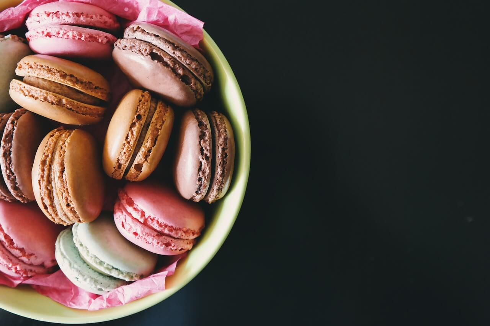

Macarrones dulces, coloridos bocaditos de sobremesa
Fecha: 20 de Agosto de 2020
Precio: Gratis
Cupo: $20
Muchas veces en Nochevieja ya estamos un poco hartos de los dulces tradicionales navideños y nos gusta darle al fin de año un toque más original, festivo y divertido. Para tener una sobremesa colorida e infantil podemos servir algunas de las llamativas bebidas sin alcohol para niños que os hemos ido proponiendo en Recetín para las sobremesas de celebración.